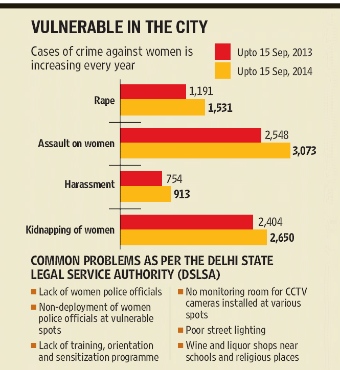

Unsafe Cities
Cities
New Delhi
New Delhi is the most vulnerable place for women in India with 1231 “reported” incidents annually. Instances of crimes against women in the Capital have not dropped despite the various measures adopted by the Delhi Police. This revelation came after an extensive ‘crime mapping’ exercise conducted in the city. The report red-flagged 44 vulnerable areas as being prone to crimes against women. In a report submitted by the Delhi Police, 1,531 cases of rape, 3,073 cases of assault against women, 913 cases of harassment, and 2,650 cases of kidnapping of women were reported in the city until September 15 2019. Malviya Nagar and Mehrauli were on the top when it came the molestation of women. The two spots also featured in areas with highest number of harassment cases. 
Jaipur
Jaipur is second in list with 517 “reported” incidents annually. The state which once prided itself on providing safety and security to women has earned a dubious distinction of being one of the most unsafe places in the country. The city has recorded highest number of rape cases in 2019. The state capital is first among metros with 507 cases of rape , while 191 cases of kidnapping of women, 30 dowry deaths and 942 incidents of cruelty by husband or relatives were registered in 2019. In the past five years, the number of reported rapes has dropped in most districts, while rapes in districts of Rajasthan have shown a noticeable rise.As per the data, crimes against women have registered an overall increase of 66.78%. The total number of cases registered between January and July in 2019 is 25,420 as compared to 15,242 cases registered during the corresponding period in 2018.If we compare cases of women atrocities registered in July 2019, the figures stand at 4,898 whereas in July 2018, the figure was 2614, the police data shows.
Mumbai
Mumbai is the third most unsafe city for women with 394 “reported” incidents annually. Mumbai is often called many things, the city of dreams, the city that never sleep, maximum city but it is also unsafe for women. There are several spots in the city that are not safe for women. A team from Mumbai Police identified several of these places and pointed out that there are as many as 437 isolated spots such as old mill compound south Bombay subway and Chowpatty are chief among them. While this number is lower than the one in 2013 which was 600 isolated spots, it is still higher and needs to urgently come down. About a 1,000 rape cases were registered across the city in 2019. 99 % of the city’s women said that sexual harassment on the street was their biggest safety concern. 63% did not tell their families about the harassment they faced. 78 % of the men said they did nothing to intervene on seeing an incident of harassment. There are 7 black listed areas, 25 red flagged areas and 100 unsafe areas in Mumbai, most in any metro city.
Hyderabad
Notwithstanding Telangana police’s claims that Hyderabad is one of the safest cities in the country for women and children, crime against them, according to the 2018 edition of “Crime in India”, but it has the 4th highest reported incidents with 184 incidents annually. Among metropolitan cities, Hyderabad recorded one of the highest crime rates of 5.5 per cent of the overall national figure, compared to big cities like Kolkata and Jaipur, which shared 5.2 per cent and 4.8 per cent of the national figure respectively. The data stated that crime against women in city has increased by 2.68 per cent. The number of cases registered under ‘outraging the modesty of women’ saw a 21% rise with police registering 454 cases this year compared to 373 in 2018. As many as 606 rape cases were reported in the State, including six rape and murder. In that year, Telangana also witnessed 10 acid attacks and five attempt acid attacks. In 2017, there were 186 cases of dowry deaths, and 641 cases of abetment to suicide, with 667 victims. The number of cases booked under ‘cruelty by husband or his family members’ stood to 6,286.